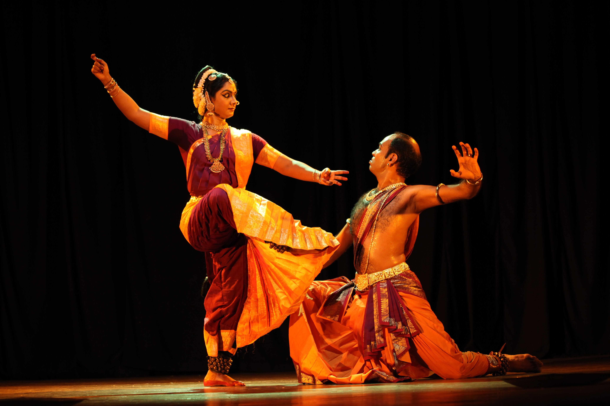

Bharatanatyam is one of the oldest classical dance forms of India. It originated in the temples of Tamil Nadu and was traditionally performed by Devadasis as a form of devotional dance. The dance is deeply rooted in Hindu mythology and is based on the Natya Shastra, an ancient Sanskrit text on performing arts written by sage Bharata Muni. Bharatanatyam combines expression (abhinaya), rhythm (nritta), and drama (natya).
Bharatanatyam performances are accompanied by Carnatic music. The main instruments used are:
Bharatanatyam dancers wear brightly colored silk sarees specially stitched for dance movements. The costume includes pleated fabric in the front that opens beautifully during dance poses. Dancers also wear traditional temple jewelry, bangles, earrings, headpieces, and ankle bells (ghungroo). Makeup is applied to highlight facial expressions and hand gestures (mudras).
Bharatanatyam is performed during temple festivals, cultural programs, classical dance festivals, and religious occasions. Today, it is also showcased in national and international stage performances and competitions.